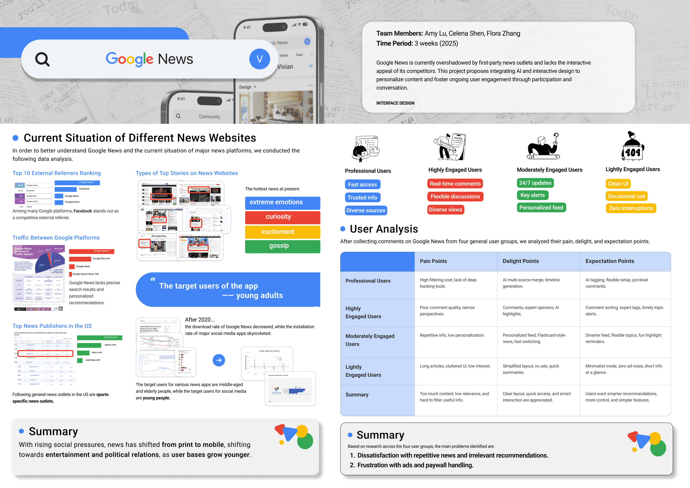
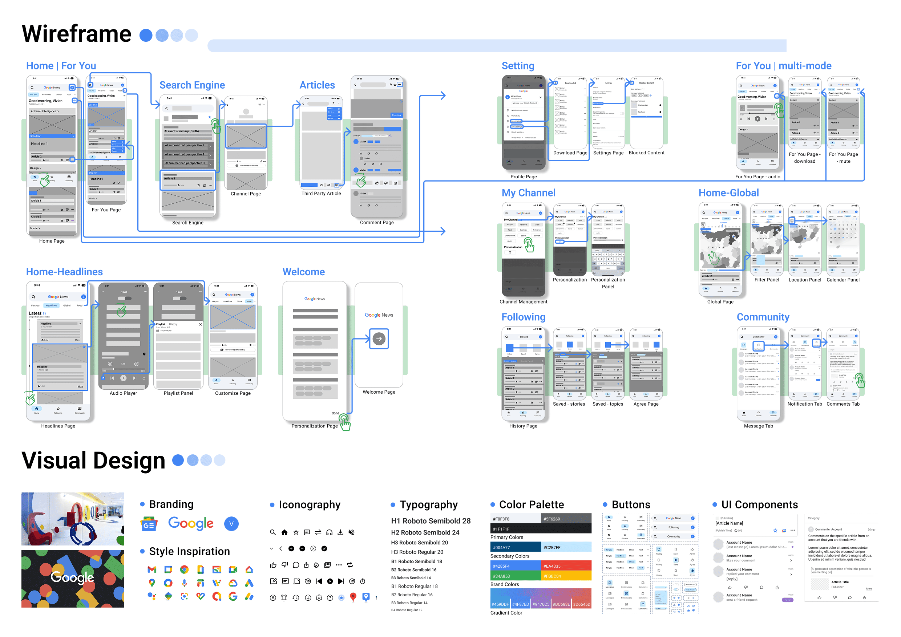
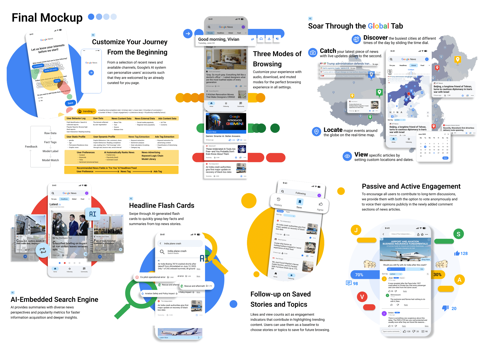
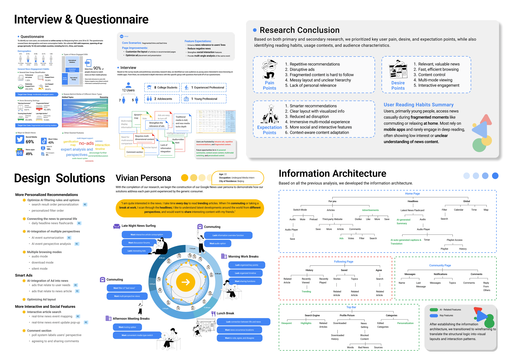

Google News is currently overshadowed by first-party news outlets and lacks the interactive appeal of its competitors. This project proposes integrating AI and interactive design to personalize content and foster ongoing user engagement through participation and conversation.
Video is here!


